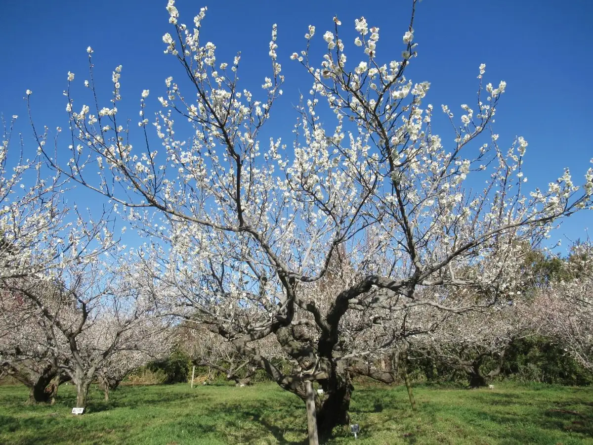
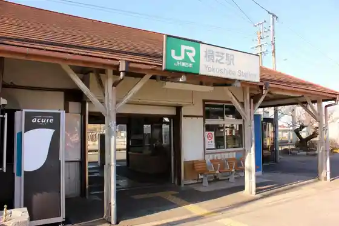
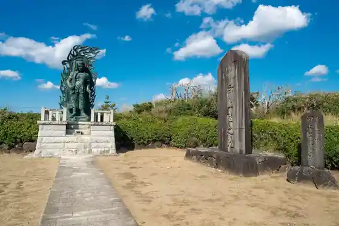
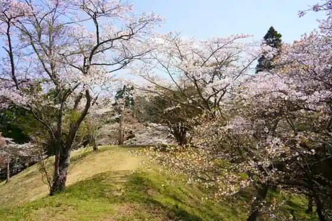
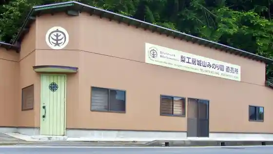

Japan / Chiba / Yokoshibahikari
Yokoshibahikari
Yokoshibahikari · Chiba
Yokoshibahikari
Highlighted on the Chiba map.

Sights
JR Yokoshiba Ekisha
Yokoshibahikari, Chiba · 0479-82-0052 · Official / source link

Narita Yama Gohonzon Joriku no Chi
Yokoshibahikari, Chiba · 0479-84-1215 · Official / source link

Sakata Castle Ruins (Moto)
Yokoshibahikari, Chiba · 0479-84-1215 · Official / source link
Tonozuka Himezuka
Yokoshibahikari, Chiba · 0479-84-1358 · Official / source link

Shiroyama Mi no Ri Sono
Yokoshibahikari, Chiba · 0479-82-7441 · Official / source link

Marinpia Kuriyamagawa
Yokoshibahikari, Chiba · 0479-84-1215 · Official / source link
Kosai Tera
Yokoshibahikari, Chiba · 0479-85-1010 · Official / source link
Machi Hara Oicho
Yokoshibahikari, Chiba · 0479-84-1358 · Official / source link
Yakata Shi Sha Shrine
Yokoshibahikari, Chiba · 0479-84-1358 · Official / source link
Yokoshiba Ekimae Johoko Ryu Kan (Yoridokoro)
Yokoshibahikari, Chiba · 0479-74-8585 · Official / source link
Sambu Ubayama Kaizuka
Yokoshibahikari, Chiba · 0479-84-1358 · Official / source link